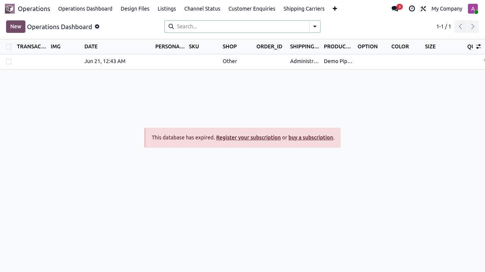
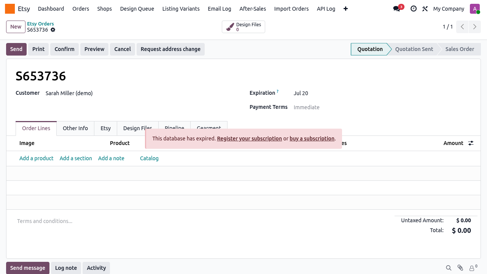

This report compares the owner-facing contract (docs/owner/business-flows/ flows 1–4, CONTRACT-v1.0.md, the HUONG_DAN_* guides, role docs, and the docs/process-flows/ TO-BE deck) against the actually-built code in custom_addons/ (etsy_integration, multichannel_hub_core, multichannel_hub_fulfillment). Every promise was independently re-verified against code (file:line) and, for the headline screens, against the live UI on namco_odoo19 (localhost:8169) on 2026-06-27.
Methodology note — why re-verification mattered. Two automated inventory passes disagreed and each produced false positives. Spot-checks proved it: one pass called the Etsy Publish wizard "dead code" (it is button-wired on both product and listing forms); another said the Channel-Status kanban was missing (it exists and renders 3 groups live); a third missed the seeded "In Lại" reprint state (it is in order_pipeline_state_seed.xml:69). No verdict below rests on a summary alone — each is grounded in code and, where marked, a live screenshot.
1 · Executive summary
~30
Kept (end-to-end)
4
Partial
1
Unwired
3
Missing
1
Bug
2
Deferred (owner→v2)
1
Blocked (external)
Verdict. The system keeps the large majority of the functional contract end-to-end — order ingestion (API + email fallback), publish-to-Etsy, the 17-stage pipeline with audit + reprint, Gearment quote→webhook→tracking, design-file approval, GKE tracking import + carrier detect, address-change approval, and the refund ticket all trace to working, entry-pointed code. The felt gap is concentrated in UI/UX presentation — no KPI band on the dashboard, no pipeline board, fragmented navigation — which is high daily visibility and low build cost. The remaining functional items are small (refund automation, an RD dashboard, one backfill bug) plus one externally-blocked feature (buyer conversations).
Status legend
KEPT code + entry-point confirmed
PARTIAL works, a promised piece missing
UNWIRED backend exists, no usable view
MISSING not built
BUG built but defective
DEFERRED owner moved to v2
BLOCKED external dependency
role doc role-5-pd.html exists; no group_pd (maps to production/marketing today)
Low-Med
Price-Control / anomaly dashboard (RD, Story 6.5)
MISSING
not built; role doc marks "🟥 Trong thiết kế"
Med
Sync-health KPI tile
PARTIAL
models + list views exist; no dashboard tile
Low
Listing-backfill published-vs-draft
BUG
etsy_listing_backfill_wizard.py:79-92 sets state='published' but _sync_channel_statuses (product_template.py:370-373) seeds a draft row first → matched live listing stays draft
Med
9 · Live UI evidence (namco_odoo19, 2026-06-27)

Operations Dashboard. A flat wide table (25 visible columns: TRANSACTION_ID, IMG, DATE, PERSONALISATION, SKU, SHOP, ORDER_ID, SHIPPING_NAME, PRODUCT_NAME, OPTION, COLOR, SIZE …) with zero KPI cards (JS probe: kpi_like_nodes:0). Top nav shows the Operations app only — the Etsy app is separate. Top bar is the default light theme, not #714B67. (Banner "database has expired" is a local license artifact, not a defect.)

Sale order form (Etsy app). Confirms tabs Order Lines · Other Info · Etsy · Design Files · Pipeline · Gearment and the Request address change header button — validating the Flow 2/3a/3b/4 form claims in one shot. The Etsy app's own nav (Dashboard · Orders · Shops · Design Queue · Listing Variants · Email Log · After-Sales · Import Orders · API Log) is distinct from the Operations app's nav, evidencing the navigation fragmentation.
10 · Where the contract over-promises
KPI dashboard cards — the flow mockups show a 3-card summary band; the live dashboard has none. Most-visible gap.
Refund — the guide implies refunds are handled in-system; today the etsy.order.ticket only tracks the refund — the money is still refunded by hand on Etsy (no API call).
Conversations / buyer messages inbox — promised in the Marketing role doc, but blocked: Etsy denied the conversations_r scope (E1). Cannot build until re-approved.
RD & PD roles — both have full role docs, but neither has a security group or a functional landing screen (RD's price dashboard is unbuilt).
"Purple chrome for free" — the contract claims the navbar is already #714B67; on local it is the default light theme. Brand chrome is only partially applied (form tabs).
Where prior audits were too pessimistic (corrected here): Flow 3b Gearment is fully built (quote, webhook, API-log, fulfillment-detail). The Publish wizard is wired. The Channel-Status kanban exists. The "In Lại" reprint state is seeded and reachable. None of these are gaps.